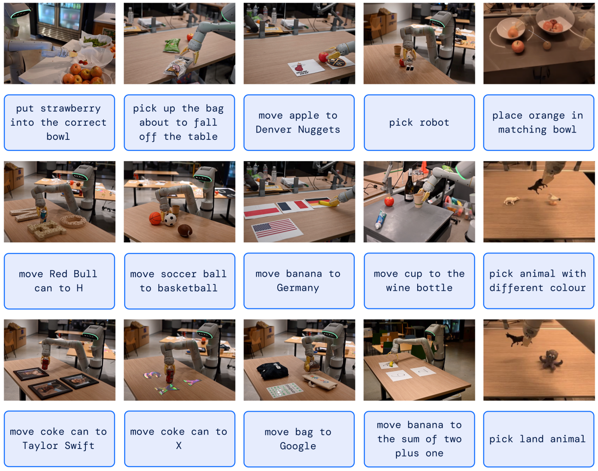

Câu chuyện bởi:
Thomas Macaulay
Google DeepMind có một mô hình AI mới có thể điều khiển các nhiệm vụ bằng rô-bốt mà nó chưa bao giờ được huấn luyện để thực hiện.
Được đặt tên là RT-2, mô hình học hỏi từ dữ liệu web và robot. Sau đó, nó biến thông tin này thành các hướng dẫn đơn giản cho máy móc.
Trong các thử nghiệm, mô hình được yêu cầu thực hiện các hành động chưa từng thấy trong dữ liệu rô-bốt, chẳng hạn như đặt cam vào một chiếc bát giống hệt nhau. Để thực hiện theo các lệnh này, hệ thống phải dịch kiến thức từ dữ liệu dựa trên web. Theo DeepMind, mô hình này có tỷ lệ thành công 62% cho các hoạt động này — gấp đôi so với mô hình tiền nhiệm của nó, RT-1.
Vincent Vanhoucke, người đứng đầu bộ phận robot của DeepMind cho biết: “Giống như các mô hình ngôn ngữ được đào tạo trên văn bản từ web để tìm hiểu các ý tưởng và khái niệm chung, RT-2 chuyển kiến thức từ dữ liệu web để thông báo hành vi của rô bốt. “ Nói cách khác, RT-2 có thể nói chuyện với robot.”
Các thử nghiệm cho thấy RT-2 có khả năng tổng quát hóa ấn tượng. Nó cũng có một sự hiểu biết trực quan và ngữ nghĩa được cải thiện về dữ liệu robot mà trước đây chưa từng gặp.
Đáng chú ý là mô hình có thể sử dụng lý luận thô sơ để tuân theo các lệnh mới của người dùng. Thật ấn tượng, nó thậm chí có thể thực hiện suy luận ngữ nghĩa nhiều giai đoạn. Chẳng hạn, khi được hướng dẫn chọn một vật có thể dùng làm búa, RT-2 đã xác định chính xác một tảng đá là lựa chọn tốt nhất.
Trong một đánh giá khác, người mẫu được yêu cầu đẩy một chai nước sốt cà chua về phía một khối lập phương màu xanh lam.
Có một số mục trong cảnh, nhưng mục duy nhất trong tập dữ liệu huấn luyện là khối lập phương. Tuy nhiên, RT-2 đã đẩy thành công sốt cà chua đến đích đã chỉ định.
Vanhoucke cho biết: “RT-2 không chỉ cho thấy những tiến bộ trong trí tuệ nhân tạo đang lan nhanh như thế nào đối với người máy, mà nó còn cho thấy nhiều hứa hẹn đối với những người máy có mục đích chung hơn”. “Mặc dù vẫn còn rất nhiều việc phải làm để tạo điều kiện cho rô bốt hữu ích trong môi trường lấy con người làm trung tâm, nhưng RT-2 cho chúng ta thấy một tương lai thú vị cho ngành rô bốt chỉ trong tầm tay.”